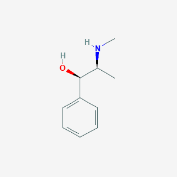

Ephedrine
- Ephedrine is created via a derivative of phenylalanine. Through various chemical processes, Ephedrine is created

- Effects-As a central nervous system stimulant, ephedrine increases basal metabolic rate (BMR), meaning the body burns calories faster. It is also able to induce fat loss via increasing the amount of fat available for fuel as well as by increasing heat expenditure. Ephedrine also interacts with muscle cells, increasing heat expenditure in them as well as fat cells. It can also prevent the breakdown of muscle tissue to a small degree.
- Detection
- The techniques of liquid chromatography and gas spectroscopy can be used to detect Ephedrine in urine samples.